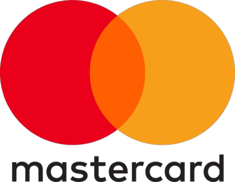

About the fair
Research makes an impact when people hear about it.
A research poster turns a complex project into a visual story that people can understand, question, discuss and link to new ideas.
At the IndabaX Nigeria Poster Fair 2026, researchers and students will bring their work out of papers and presentations and into conversation with a wider community.
Sometimes one question after a poster presentation is all it takes to start a new collaboration.
Turning research into conversation.- Explore the postersWalk the floor and discover 33 research projects told as visual stories.
- Ask a questionMeet the researchers behind the work and hear the story first-hand.
- Start a collaborationLink ideas across disciplines and leave with new connections.
Who should come
Open to a diverse research and innovation community.
You do not need to work in the same field as everyone else.
-
Students and early-career researchersShare your work and get feedback.
-
Academics and research professionalsDiscover emerging work and mentor new researchers.
-
AI and machine learning enthusiastsSee what researchers around you are building.
-
Data scientists and computational researchersCompare methods and swap ideas.
-
Innovators and technology practitionersFind research ready to become real products.
-
Anyone curiousIf you want to learn from emerging research, you belong here.
Interdisciplinary conversations are often where new ideas begin.
See date and venuePlan your visit
Date and venue.
See you at OOU, Ago-Iwoye.
-
22–24 October 2026Thursday to Saturday
-
Administration Hall Lecture TheatreFaculty of Law, Olabisi Onabanjo University (OOU), Ago-Iwoye, Ogun StateFormerly Faculty Theatre, Mass Communication Faculty
-
Phone+234 805 536 9482
Partners
Our sponsors and partners.
The organisations helping turn research into conversation.

Support the Poster FairPartner with us to put Nigerian research in front of a wider community.
Become a sponsor
Join the conversation
The fair, live on social.
Follow along, share what you discover and see what everyone else is talking about.
Use the hashtags
#IndabaXNigeriaPost photos of your favourite poster, share a new idea, or shout out a presenter who changed how you see a problem.